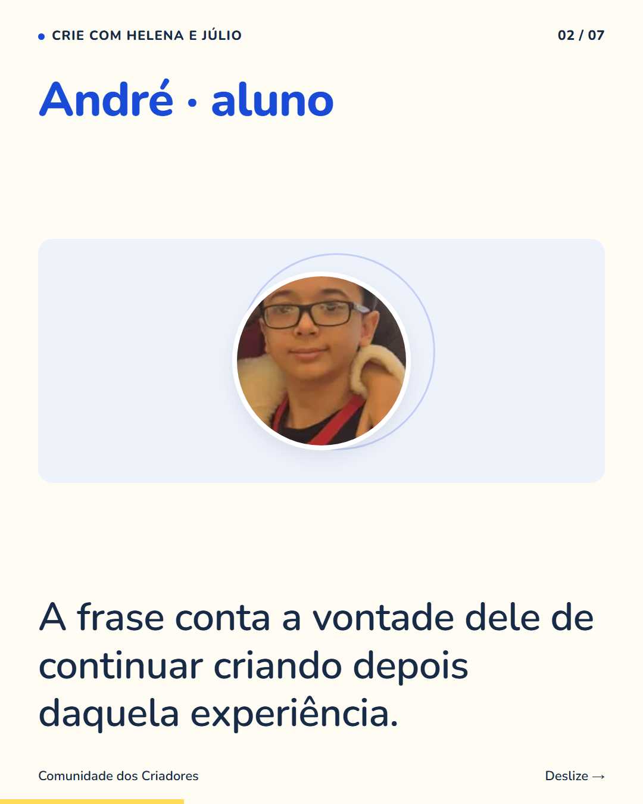
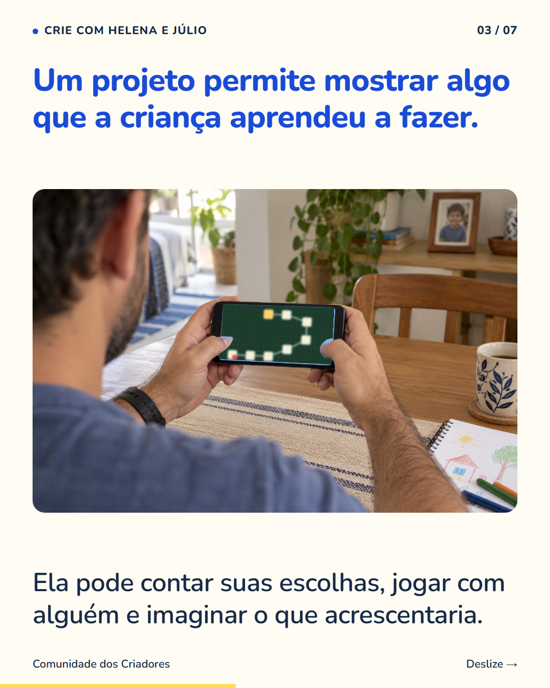
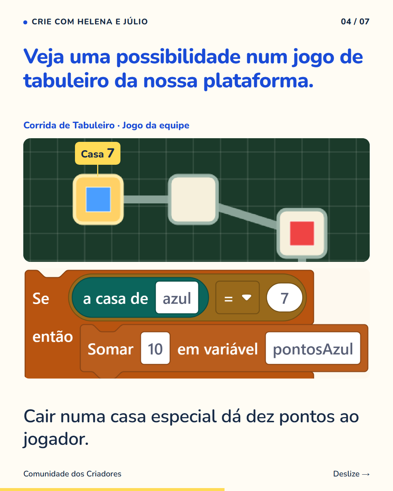
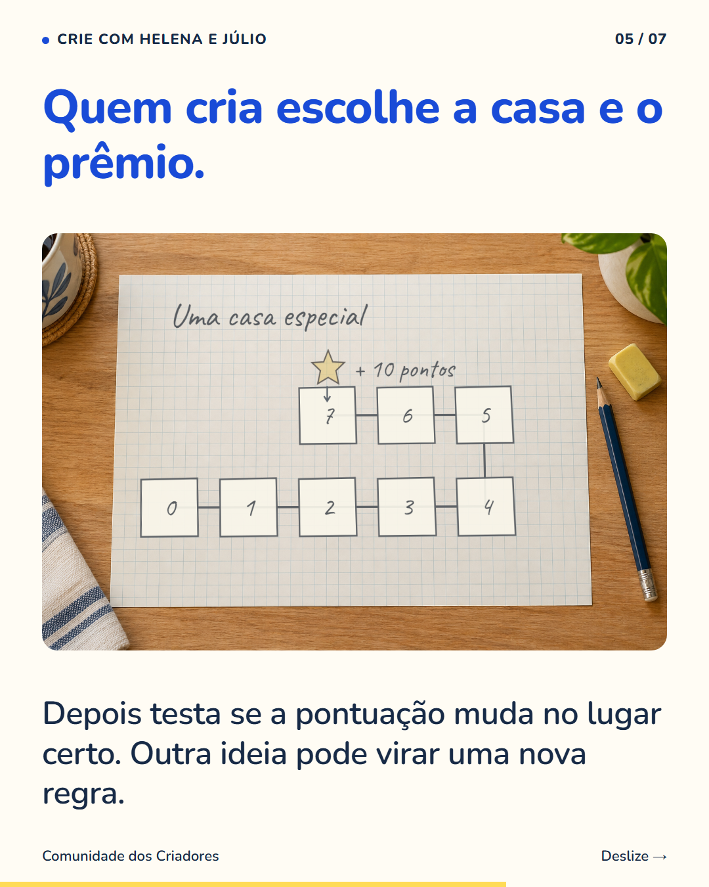
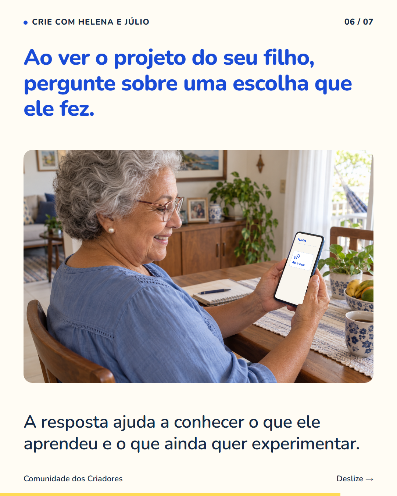
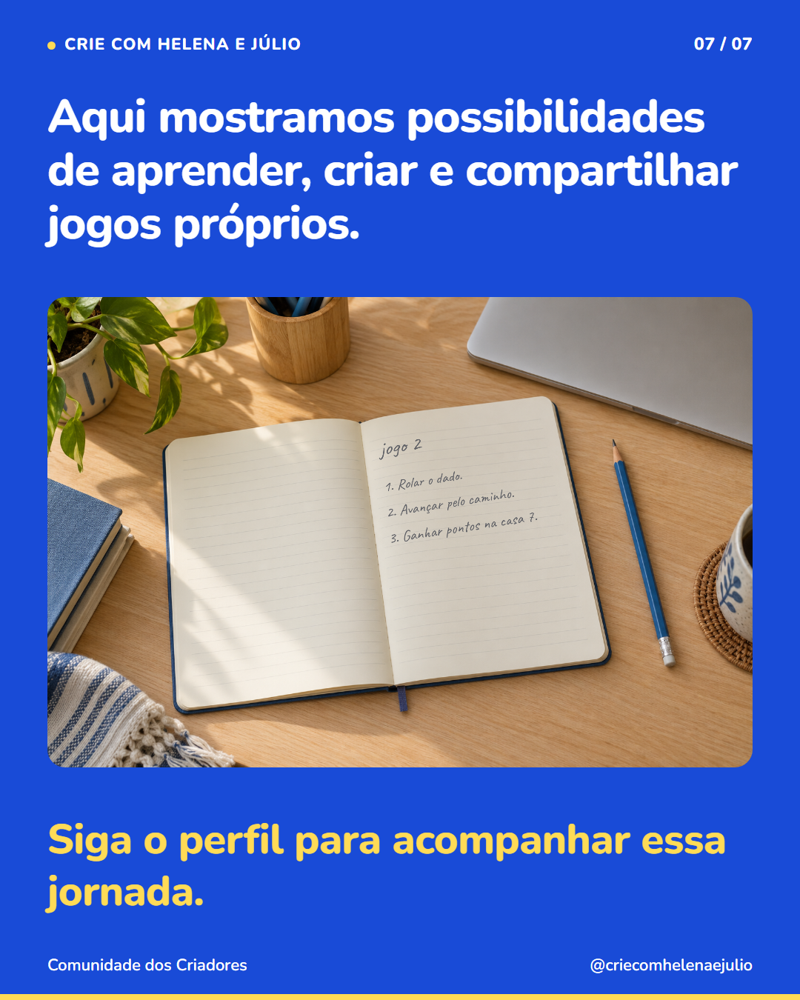

7 slides · 1080 × 1350 · Copy revisada · Relato real do André, escolhas e demonstração de tabuleiro






André contou que terminar o primeiro jogo deu vontade de criar outro. ‘Esse foi o primeiro e já quero fazer um maior.’ Esse é o desejo dele depois da experiência. Outras crianças podem querer mudar o mesmo projeto, mostrar para alguém ou experimentar um tipo diferente de jogo. Ao acompanhar uma criação, pergunte o que seu filho aprendeu a fazer e qual escolha foi dele. No tabuleiro da demonstração, por exemplo, alguém precisou decidir qual casa dá pontos e testar essa regra. São detalhes que ajudam a enxergar o aprendizado por trás da tela. Siga o perfil para conhecer mais possibilidades.